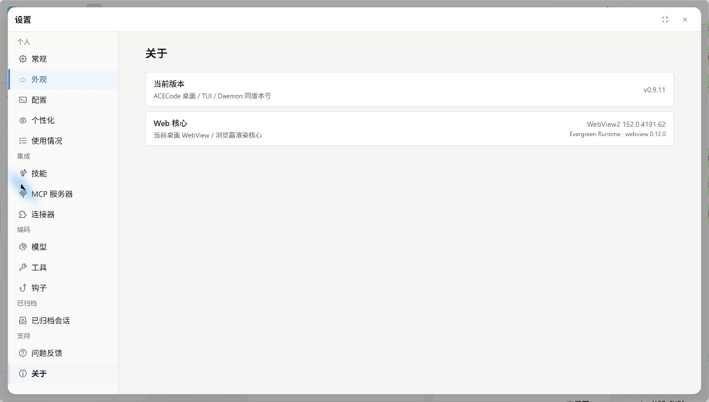

更新与卸载
沿用原来的安装方式更新程序，确认版本与任务记录，再按需要卸载。
更新前准备
先确认 ACECode 是通过 npm、图形安装器还是压缩包安装的。更新时沿用原来的安装方式，便于管理程序位置与版本。
- 完成或停止正在运行的任务，保存项目中自己的修改。
- 退出 ACECode 桌面端、TUI 和相关后台服务。
- 如果需要保留独立备份，先复制用户配置和任务数据目录。
程序文件与用户数据通常分别存放。更新程序时，不需要清空配置或会话；数据位置见配置与任务数据。
更新 npm 安装
重新安装对应包的最新版本即可。只更新自己安装过的入口；同时使用桌面端和 CLI 时，可以分别更新。
桌面端
npm install -g @aceagent/desktop@latest终端版
npm install -g @aceagent/acecode@latest更新完成后，重新打开 ACECode。安装时仍需保留可选依赖。
更新安装包与便携版
Windows 安装器
在 官方发布页 下载新的同架构安装器，退出 ACECode 后按安装向导更新到原安装位置。
macOS PKG
选择与当前 Mac 芯片匹配的新 PKG，退出 ACECode，再按系统安装器提示安装。应用仍位于当前用户目录下的 ~/Applications/ACECode.app。
压缩包与自升级
对于支持自升级的独立安装，可以在终端运行：
acecode update使用便携版时，在程序目录运行 ./acecode update；Windows PowerShell 使用 .\acecode.exe update。按命令实际输出确认更新结果。
需要手动更新时，将对应平台的新包完整解压到新的目录，再使用新目录中的程序。请保留包内程序与资源的相对位置。
检查更新结果
桌面端可在设置 > 关于查看当前版本。安装了 CLI 时，可以执行：
acecode --version{kind=link}

重新打开一个已有任务，检查模型选择与历史记录。若版本仍是旧的，请确认启动的是刚更新的安装位置，而不是电脑上另一份 ACECode。
卸载 ACECode
先退出应用和后台服务，再按安装方式卸载。
通过 npm 安装
按需卸载桌面入口或 CLI：
npm uninstall -g @aceagent/desktopnpm uninstall -g @aceagent/acecodeWindows 安装器
在 Windows 设置 > 应用中找到 ACECode 并选择卸载，也可使用安装器创建的卸载入口。
macOS PKG
退出 ACECode 后，将 ~/Applications/ACECode.app 移到废纸篓。当前用户安装不需要使用管理员卸载命令。
便携版与 Linux 压缩包
退出相关进程后，移除当初解压的程序目录。如果曾手动添加 PATH 或创建启动链接，也一并移除对应设置。
配置与任务数据
个人安装默认将配置与会话等数据保存在用户主目录下的 .acecode。使用自定义数据目录或系统服务账号时，位置可能不同。
| 系统 | 默认用户数据目录 |
|---|---|
| Windows | %USERPROFILE%\.acecode |
| macOS / Linux | ~/.acecode |
卸载程序和删除个人数据是两件独立的操作。希望以后继续使用原来的模型配置和任务记录时，请保留数据目录。